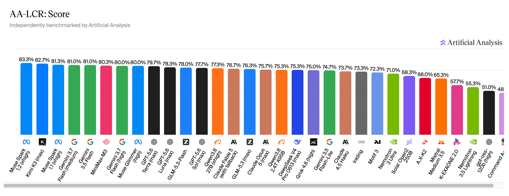

Qi Qi
Senior Research Scientist @ Meta Superintelligence Lab
Ph.D. in Computer Science, University of Iowa
Senior Research Scientist @ Meta Superintelligence Lab
Ph.D. in Computer Science, University of Iowa
I am a Senior Research Scientist at Meta Superintelligence Labs, where I work on long-context and long-horizon post-training for frontier language models. I work closely with Xinyun Chen and Denny Zhou.
I led long-context post-training for Llama 4 Maverick and have been a core contributor to the long-context capabilities of Muse Spark 1.x. Most recently, Muse Spark 1.2 achieved 83.3% SOTA performance on AA-LCR, ranking #1 across all open and closed models.
I received my Ph.D. in Computer Science from the University of Iowa, advised by Professor Tianbao Yang. My earlier research spans machine learning and optimization, including distributionally robust optimization, learning with imbalanced data, and multimodal learning.

Conference Reviewing: ICML / NeurIPS / ICLR / CVPR / IJCAI